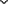

Pular para o conteúdo
Menu
Home
Sobre
Programas

Comunicação
Transparência
Agendamentos
Coworking
Podcast
Fotografia
Música
Mapa de unidades
Dúvidas
Normas de uso
Conteúdo do subdomínio
O cabeçalho e o rodapé acima/abaixo vêm de partials/header.php e partials/footer.php.